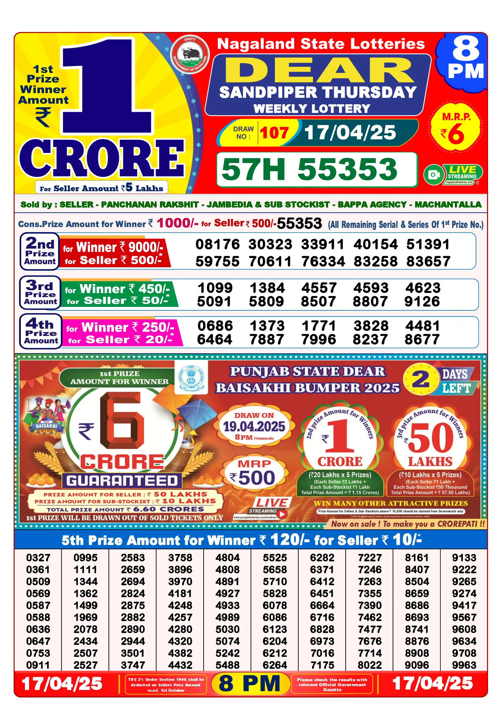

Lottery Sambad Today's Results, Winning Numbers & Guide
Since the establishment of State Lotteries in the late 1960s, the so-called "Dear Lottery" has been making millions of Indians dream of riches. One of the reasons for its success is the draw held every day, three times a day, and that's why so many people check the results so often. But let's analyse everything in more detail.
Lottery Sambad Result Today
If you bought a ticket, it's crucial that you check the results promptly since draws are held every few hours. As such, you won't risk getting confused with a different draw or having to spend time searching for past results.
Today's Draw Results - Check Winning Numbers
Checking today lottery result is pretty simple:
- Identify your ticket number and series at the top and bottom of your ticket
- Compare your number with the official results making sure to check all tiers
- If your number is there, you win the corresponding prize. Otherwise, you may have to try your luck again
To follow are today Lottery Sambad results:
-
1:00 PM Draw Result
1st Prize: 73E 92093
-
6:00 PM Draw Result
1st Prize: 94D 78533
-
8:00 PM Draw Result
1st Prize: 50H 81330

Where to Check Lottery Sambad Results?
Finding the results is rather easy and accessible. Aside from the official websites and YouTube channels, they're published on sites like ours as well as on several physical and online versions of newspapers.
How to Claim Your Winnings?
Should you be one of the lucky winners, here's how to claim your prize:
- Double-check that your ticket number is indeed a winning one (this includes making sure you're checking the right draw's day and time)
- If you won up to ₹10,000, you're able to cash out directly where you purchased your ticket or at other authorised retailers.
- For wins over ₹10,000, instead, you need to provide more information and contact your state's relevant authority. Normally, you must fill in and submit a form, personal information, and a copy of the winning ticket.
What is Lottery Sambad?
Lottery Sambad is a state-run lottery system highly popular all over India or at least in those states where lotteries are legal. As is often the case, the creation of the lotteries was linked with the need to find alternative sources of income for the states to fund various welfare projects. The idea behind Lottery Sambad is to provide an easy way to have all the results in the same place.
As mentioned, not all states participate in the lottery. A 2015 government regulation, allowed each state to decide whether or not to allow this type of gambling. The resolution was welcomed by the following 13 states:
- Arunachal Pradesh
- Assam
- Goa
- Kerala
- Madhya Pradesh
- Maharashtra
- Manipur
- Meghalaya
- Mizoram
- Nagaland
- Punjab
- Sikkim
- West Bengal
Why is Lottery Sambad Popular?
The popularity of the lottery is mostly linked to the many chances one has to win. Thanks to frequent draws, high payouts, and affordable ticket prices, for many this became almost a sort of daily or weekly ritual.
Lottery Sambad Draw Timings & Schedule
What is a ritual without a well-established schedule? That's why you can rest assured that you will always find results at the given times every day of the year.
Complete Draw Timetable
For most lotteries, the three draws are held as follows:
- 1:00 PM
- 6:00 PM
- 8:00 PM
The prize breakdown may also differ from one state to another but, normally, most lotteries follow this structure:
- 1st Prize: ₹1 Crore
- 2nd Prize. ₹9000 - 10 winners
- 3rd Prize. ₹450 - 10 winners
- 4th Prize. ₹250 - 10 winners
- 5th Prize. ₹120 - 100 winners
- Consolation Prize. ₹1000 - 1 winner
How Lottery Sambad Draws Are Conducted?
The actual draws are completely automated to ensure that the results can't be tampered with. Furthermore, the selected numbers are published across several channels (official and authorised) to prevent scams.
Differences Between Draw Timings
There are no differences between the timings, except for the different names they're given depending on the day of the week. For instance, the 1 PM draw on Mondays is called "Dear Dwarka", that on 6 PM on Wednesdays is "Dear Hill", and the 8 PM on Sundays is "Dear Toucan". Other than that, popularity greatly depends on individual preferences. Some prefer to try their luck with the "Dear Morning", while others wait for the 8 PM Lottery Sambad night draw to check the results when the whole family is reunited.
Nagaland State Lottery & Dear Lottery Results
Nagaland is by far the most common name when referring to Indian lotteries. That is because two out of three draws (the 1 PM and 8 PM) take place in this state. As such, it's not uncommon for players from other states to be involved in this particular lottery.
Nagaland State Lottery Result Today
Today's draws from Nagaland Lottery Sambad are:
- 1 PM - 1st Prize: 73E 92093
- 8 PM - 1st Prize: 50H 81330
How does Nagaland Lottery Work?
The process is pretty straightforward:
- Buy a ticket for just ₹6
- Wait for the draw to occur at 1 or 8 PM
- Check the results and hope for the best
If your number wins the first prize, you can fill in the Nagaland State Lottery form to claim your win. Otherwise, you can get your money from any authorised retailer.
Prize Structure & Categories
There are 5 tiers of prizes, from the lone winner of ₹1 Crore to the hundred winners of ₹120. The best part is that the ticket sellers too get their share of the win with prizes going from ₹5 Lakhs to ₹10.
Dear Lottery Sambad - Winning Numbers & Prizes
Winning number combinations in Nagaland are the same as in many other provinces. The ticket is composed of an alphanumeric code divided into two parts:
- Two numbers and a letter (eg, 50H)
- Five numbers (eg, 21318)
The first prize has the whole code, the 2nd prize only the five numbers, and all other prizes have the last four digits.
How to Verify Your Nagaland Lottery Ticket?
The first and most important step is to buy your ticket only through official channels. As such, you already have the certainty that you're holding a valid ticket. However, you must also keep it in a safe place and avoid all kinds of tampering. Make sure to prevent any cuts, marks, signs, and everything else that might modify it even in the slightest.
Other Popular State Lotteries in India
While Nagaland is by far the most renowned, there are also other state lotteries. In truth, most of them share the same numbers and prize structure as Nagaland lottery results, though they may still differ in different ways.
West Bengal State Lottery
This lottery used to handle the 4 PM draw until it changed to 6 PM and was transferred to the Sikkim State Lottery. Regardless, West Bengal is still relatively famous in India.
Kerala State Lottery
Kerala's Lottery is quite different from the others. There's only one draw per day, 8 tiers of prizes, and 11 consolation prizes. The amounts are also different and change day by day:
- ₹10,000,000 on Wednesdays (Fifty-Fifty)
- ₹80,00,000 on Thursdays and Saturdays (Karunya Plus and Karunya)
- ₹75,00,000 on Mondays and Tuesdays (Win-Win and Sthree Sakthi)
- ₹70,00,000 on Fridays and Sundays (Nirmal and Akshaya)
Sikkim State Lottery
Sikkim is not famous just for his Darjeeling tea but also for the 6 PM draw on Lottery Sambad. The structure and prizes are the same as in Nagaland.
Mizoram State Lottery
Mizoram shares a very similar structure as Sikkim, Nagaland, and West Bengal but with some slight differences:
- 4 draws a day (9:55 AM, 11:55 AM, 4 PM, and 8:30 PM)
- 5 tiers of prizes + the consolation prize but the jackpot is just ₹25 Lakhs
How to Play Lottery Sambad?
One of the reasons why Lottery Sambad is so popular is its great accessibility. If you've never played before, here's how to do it.
Step-by-Step Guide to Buying Tickets
First of all, you can buy tickets in two ways: online and offline.
Online vs Offline Ticket Purchase
Provided you make your purchase through an authorised retailer, the process is the same: just choose a vendor and pay. If you do so online, however, you'd be extra careful to select a properly licenced site. Normally, a legit site will display all their contact information and specify that they sell only paper lottery tickets. To make extra sure, always consult your state's Goverment Gazette where you will find updated and official information on the matter.
Ticket Pricing & Prize Categories
The base price for a lottery ticket is ₹6. However, there may be some special draws once in a while with higher costs but also higher prizes. For instance, on April 12, 2025, there's the Punjab State Dear Lottery with ticket prices set at ₹200 and top three prizes of ₹1.50 Crores, ₹10 Lakhs, and ₹5 Lakhs. Other than that, the prize structure depends on your state lottery with the norm being 5 tiers + 1 consolation prize.
Tips for First-Time Players
If you've only recently got curious about Lottery Sambad, here are some tips that can help you:
- As for all gambling-related things, set a daily or weekly budget and stick to it. Otherwise, you risk losing more than you can afford.
- Beware of scammers proposing schemes or systems with guaranteed wins. There are no such things as results are completely random.
- Avoid people reselling their tickets or websites promising deals too good to be true. Only go through official channels, least you risk losing your winnings.
Lottery Sambad Live Results & Updates
You'll find plenty of ways to get live results and updates for your Lottery Sambad tickets: your local TV broadcast, dedicated websites, YouTube channels, and official streams.
Where to Check Live Lottery Sambad Results?
The most immediate way is to check your State's Lottery official YouTube channel. For instance, on Nagaland's YT channel you'll get both live and recordings of every draw. Another reliable source is Lottery Sambad 247 where together with news you'll get live streaming of the draws.
These sources usually also allow you to set up notifications by subscribing to their channels.
Among the most reliable sources, we recommend the YouTube Channels of the Nagaland and Sikkim governments:
You'll find more info also on their official websites:
Old Lottery Sambad Results & Archives
Every State Lottery has its own archive with past results, but you can also find the same in dedicated Sambad sites.
In all truth, checking past results can't really help predict future numbers. However, they come in handy should you have missed the live draw and have to check tickets from previous days.
Avoiding Scams & Fraud in Lottery Sambad
As previously mentioned, avoid all unofficial sources when purchasing your tickets or withdrawing your winnings.
Also, pay attention to fake lottery schemes. As a rule of thumb, remember that anything too good to be true is usually indeed not true. You can also identify scams from strange-looking emails and unsolicited calls.
To stay on the safe side, only buy tickets from official websites and retailers. And should you win something, refer directly to a trusted official source and never let go of your ticket before cashing out.
What to Do If You Suspect Fraud?
The best course of action is to immediately contact the official State Lottery and/or the local police. They'll be most interested in finding out what's going on and helping you and others avoid being scammed.
Frequently Asked Questions (FAQ)
Is Lottery Sambad legal in India?
Yes but only in the following 13 States: Arunachal Pradesh, Assam, Goa, Kerala, Madhya Pradesh, Maharashtra, Manipur, Meghalaya, Mizoram, Nagaland, Punjab, Sikkim, West Bengal.
What are the prize amounts?
They vary from one state to another but usually range between ₹1 Crore and ₹120.
Can I play Lottery Sambad online?
You can purchase paper tickets online but there's not an online-only version.
How do I claim my prize?
Wins below ₹10000 can be cashed out at selected retailers, over that amount you'd refer to your State Lottery authority.
What time are the Lottery Sambad draws?
Draws are held at 1 PM, 6 PM and 8 PM.
Where can I check the latest results?
Use dedicated sites like ours or the official YouTube channels mentioned above.
How do I verify my lottery ticket?
Check your number at the top and bottom of the ticket, and make sure the date and time correspond to the draw your checking.
How do I buy a Lottery Sambad ticket?
You'll find tickets at mobile lottery stalls, grocery stores, newsstands, and dedicated Sambad shops.
What are the chances of winning?
Specific odds aren't publicly available but since you'll be participating with millions of people, chances of striking it big are pretty low.
What happens if I lose my ticket?
Unfortunately, should you lose your ticket, you can't claim any winnings.
How can I avoid lottery scams?
Buy and withdraw only through official channels and avoid everything else.
Are there any fake Lottery Sambad websites?
Yes, some sites can either lure you in to buy fake tickets or ask you to pay for predictions or systems that have no validity.
Is there an official Lottery Sambad mobile app?
Official websites don't mention any mobile app so either rely on trusted sources or stick to the official websites and YouTube channels.